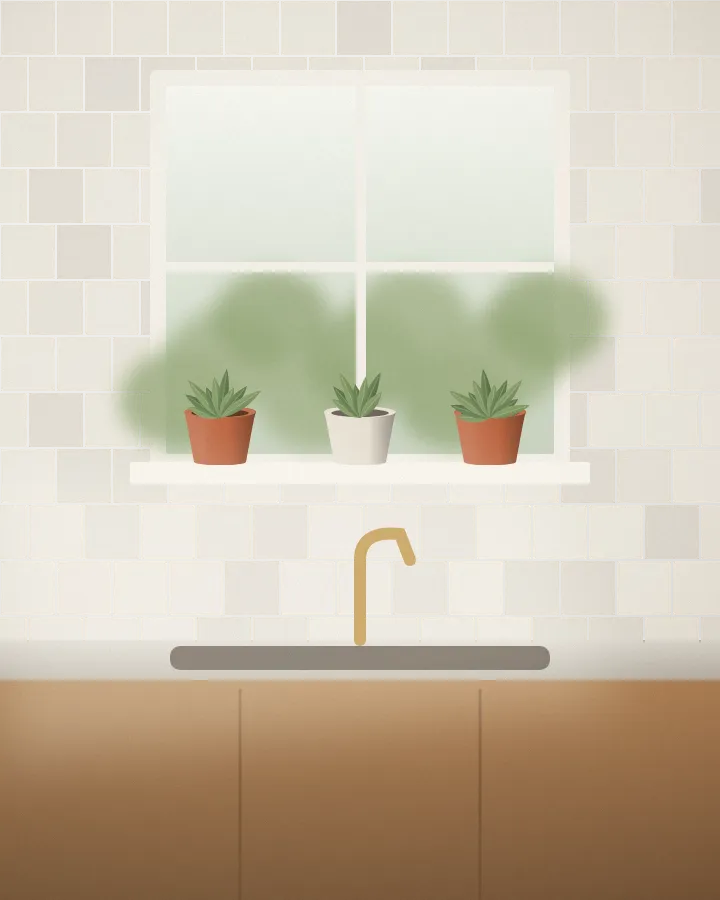
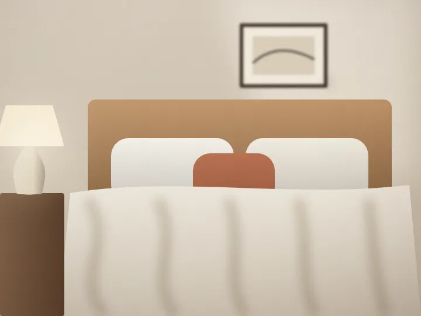
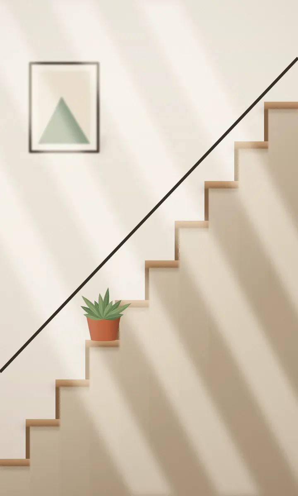
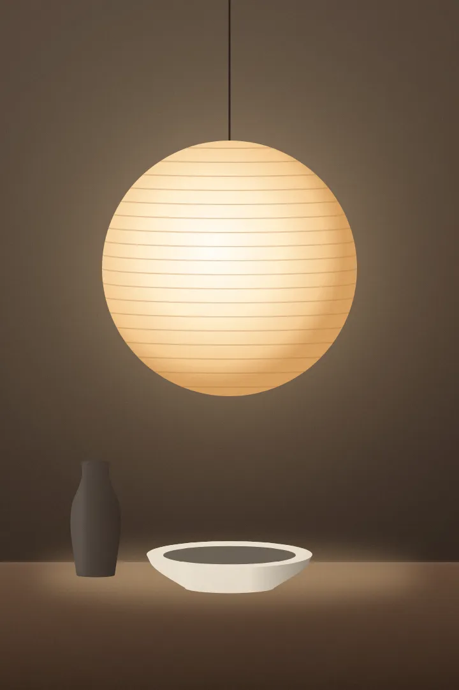
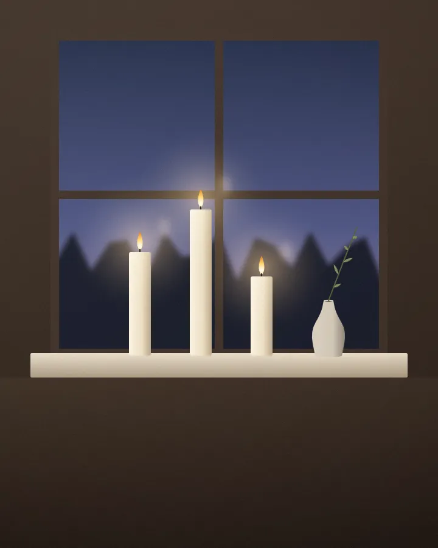
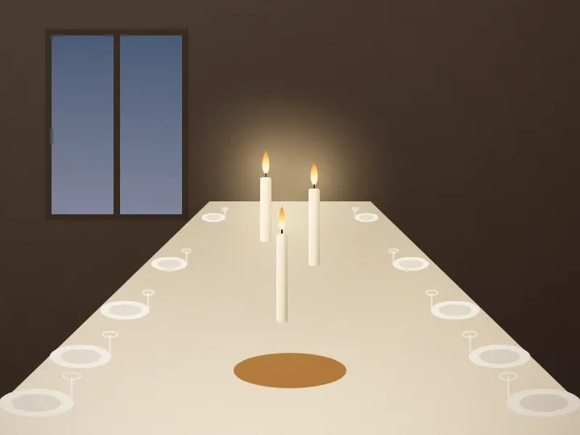
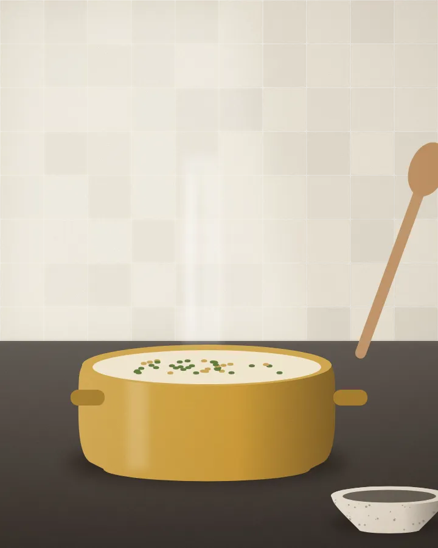
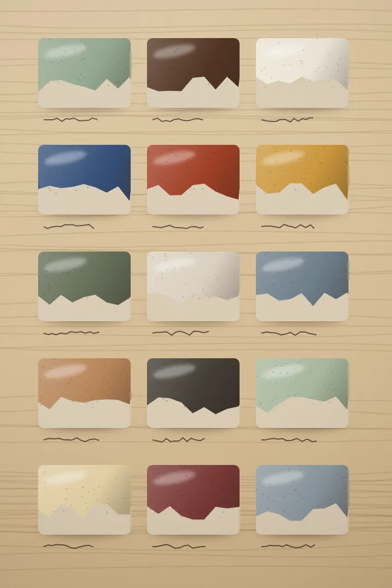
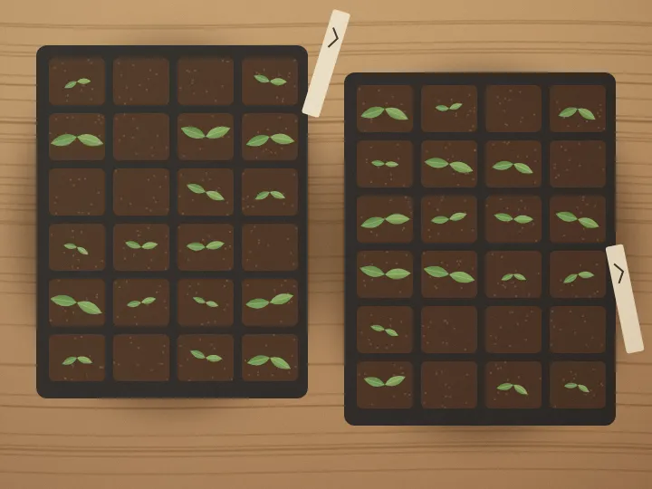
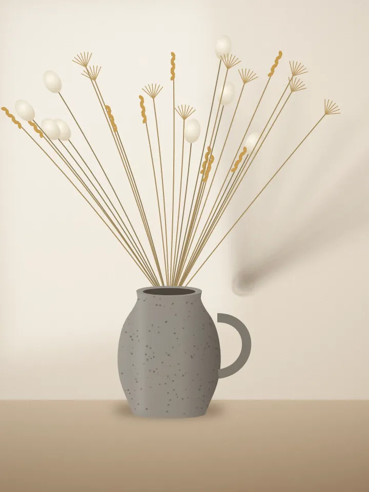

Ideas for slow homes and patient hands
Rooms, recipes and things to make, saved by three people and sorted into boards. Find one you like, save it, make it this weekend.
Fresh ideas
Country sourdough, scored for a tall ear
TATeo AbaraIndigo cloth drying in the yard
JSJuno SatoA reading corner with one good lamp
IMInes MarlowA bowl of lemons on blue linen
TATeo AbaraA quilt pieced from old shirts
JSJuno SatoPlum and almond tart
TATeo AbaraA narrow galley kitchen that still feels open
IMInes MarlowHerbs in a row along the railing
JSJuno SatoA desk lamp, a stack of books, a slow evening
IMInes MarlowThree shapes thrown in one afternoon
JSJuno SatoTomatoes, good oil and torn basil
TATeo AbaraWhite walls, a stool and one branch
IMInes MarlowCardamom buns on a crowded tray
TATeo AbaraBoards worth following
All boardsTwelve ideas, every Sunday morning
One letter a week with the best new saves from every board. No ads, and one click to leave.
Explore every idea
26 ideas across rooms, food, clay, cloth and gardens. Pick a category, or search for anything.
Nothing matches that yet
Try a shorter word, or one of these.
Plum and almond tart
Almond cream in a sweet crust, topped with rings of sliced plums. Good warm, better the next morning.
What makes it work
- Blind-bake the crust for 15 minutes
- Slice plums thin and overlap them
- Brush with warm jam to finish
More like this
Boards
Each board is one person’s shortlist on one subject. Follow a board to find it again.
7 boards

Small kitchens that work
6 ideas · Ines Marlow


Warm white rooms
6 ideas · Ines Marlow


Low light, long evenings
5 ideas · Ines Marlow
Weekend bakes
4 ideas · Teo Abara


A table for six
6 ideas · Teo Abara

Made by hand
6 ideas · Juno Sato


A balcony garden
4 ideas · Juno Sato
No boards here yet.
Weekend bakes
TATeo AbaraBreads, buns and tarts for slow Saturday mornings.
4 ideas
Ines Marlow
Rooms and light
Styles small flats for a living and keeps the ideas that survive real life: a shelf that holds, a lamp at the right height.
10 ideas · 3 boards
Saved
Ideas you saved in this browser, newest first. They stay here until you clear them.
Three people, one big wall of ideas
Fernwick started as a shared folder of pictures between friends who kept asking each other how things were made. Now it is a small library: every idea has a picture, a few notes on how to do it, and the name of the person who saved it.
How it works
1
Find
Browse the wall, pick a category or search for a word. Every picture opens to the notes behind it.
2
Save
Point at a picture and press Save. Your saves collect in one place, ready for the weekend.
3
Make
Each idea ends in three short notes: the measurements, the order, the thing we got wrong first.
Who saves them
The Sunday letter
Twelve new ideas every Sunday at 8 am, picked from the boards you choose.
You’re on the list
We’ll write to with .
Share your work, or just say hello
Made something from a board? Want to work together? We read everything and reply within a week.
Thanks,
Your message is with us. We’ll reply to within a week.
Questions
How saving, boards and the letter work.
Do I need an account to save ideas?
No. Saved ideas stay in this browser until you clear them. If you switch devices, they stay behind.
Can I make the things I find here?
Please do. Every idea is here to be copied in your own home. The pictures belong to the people who made them, so ask before you publish them elsewhere.
Where do the pictures come from?
From the three of us, and from readers who send their work with permission. Each idea names the person who saved it.
How do I suggest an idea?
Send it through the contact form with a link to your pictures. We reply to everything within a week.
How often does the letter come?
Every Sunday at 8 am, or once a month if you prefer. You choose the subjects when you subscribe.
Can I share a board?
Yes. Open the board and press Share to copy its link.
Last updated 1 November 2026
Privacy
We keep as little as we can, and we never sell it.
What we collect
Your email if you subscribe, and what you send us through the contact form. Saved ideas stay in your browser; we never see them.
Why
To send the letter you asked for and to answer your messages.
How long
Until you unsubscribe or ask us to delete it. Messages are deleted after a year.
Your choices
Write to hello@fernwick.example to see, correct or delete what we hold about you.
Last updated 1 November 2026
Terms
The short version: make anything you like, and credit the people whose pictures you share.
Pictures
Every picture belongs to the person who made it. Saving and linking are fine; republishing needs their permission.
Ideas and instructions
We test what we can, but measurements and materials vary. Take care with tools, heat and kilns.
Sending us your work
When you send pictures, you confirm they are yours to share, and you let us show them on Fernwick with your name.
This idea got lost
The link may be old, or the idea may have moved to another board.